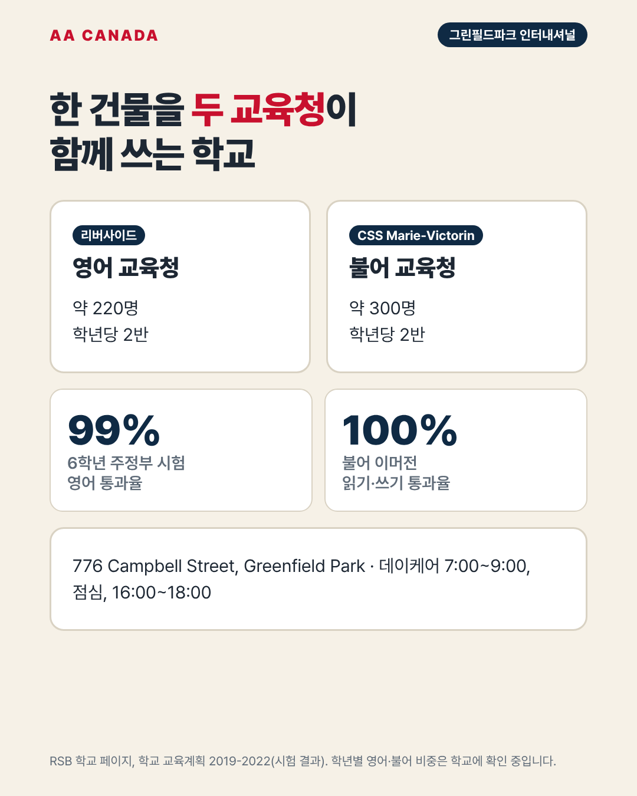

그린필드파크 프라이머리 인터내셔널 (Greenfield Park Primary International School, GPI)

기준일 2026-10-21 · AA Canada 정리
교육청 공통 정보는 리버사이드 교육청 공통 안내를 보세요.
한 줄 요약: 2002년부터 IB 초등(PYP) 인증을 받은 학교. 영어 교육청과 불어 교육청이 한 건물을 함께 쓰는 특이한 구조입니다.
한눈에 보기
| 항목 |
내용 |
| 주소 |
776 Campbell Street, Greenfield Park (Longueuil) |
| 연락처 |
450-672-0042 · gppis@rsb.qc.ca |
| 학년 |
1~6학년만 (유치원 없음) |
| 학생 수 |
약 520명 (리버사이드 약 220명 + 불어 교육청 CSS Marie-Victorin 약 300명) |
| 교장 |
Julie Ruel |
| 수업 시간 |
8:50~15:52 |
| 데이케어 |
7:00~9:00, 점심, 16:00~18:00 |
| 프로그램 |
불어 이머전 IB PYP (2025-26 학군 안내). 옛 안내에는 3~6학년 이중언어반도 표기 |
| 인증 |
IB 월드스쿨 PYP, 2002년 7월 |
프로그램
- 학년마다 4반(리버사이드 2반, 불어 교육청 2반) 구조였습니다(2019-2022 교육계획).
- 영어·불어 비중: 1~2학년 영어 90%, 3~6학년 50/50 (AA Canada 자료, 2021. 현재 "불어 이머전 IB"로 표기되어 있어 학교에 재확인 필요).
- 성과(2019-2022 교육계획): 6학년 주정부 시험 영어 통과율 99%, 불어 이머전 읽기·쓰기 100%.
AA Canada 코멘트: 이런 가족에게 추천
- IB 탐구 수업과 불어를 둘 다 원하는 부모 동반 가족 (1학년 이상).
- 영어 실력 향상이 목표인 조기유학생에게는 불어 비중이 높습니다. 영어 중심이면 굿셰퍼드나 세인트 주드 영어반을 권합니다.
- 입학 기준(학군 우선, 선발 여부)은 학교에 확인합니다.
출처
- RSB 학교 페이지: https://www.rsb.qc.ca/school/greenfield-park-primary-international/
- IB 학교 등록: https://ibo.org/school/001914/
- 교육계획: https://www.rsb.qc.ca/wp-content/uploads/2020/12/Educational-project-GPI.pdf
- 위키백과: https://en.wikipedia.org/wiki/Greenfield_Park_Primary_International_School
- RSB Programs & School Zones 2025-26